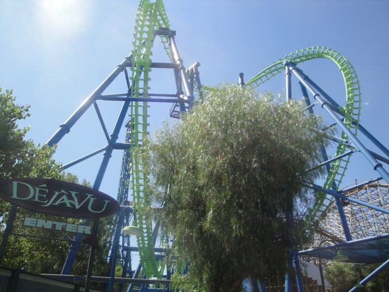

DejaVu's Last Day

All right. So as you all know by now, DejaVu will be leaving Six Flags Magic Mountain and be shipped to Six Flags New England. There's A LOT that I have to say about this decision. Most of which is negative. But anyways, since I actually liked DejaVu, I spent a day at Six Flags Magic Mtn to say my goodbyes and made this special update to remember it (as well as to show SFNE locals what they'll be getting).
Hope you like DejaVu because this update contains nothing but DejaVu.
 I was actually one of few enthusiasts who truely liked DejaVu. I definetly considered it as one of the most underrated roller coasters ever.
I was actually one of few enthusiasts who truely liked DejaVu. I definetly considered it as one of the most underrated roller coasters ever.
 So yeah. I'm not very happy about this decision. (Though really, anything is better than turning it into scrap metal.)
So yeah. I'm not very happy about this decision. (Though really, anything is better than turning it into scrap metal.)
 But really, I must ask. Why the hell are they sending DejaVu to Six Flags New England!!!!? It makes no sense!!!! It makes no fucking sense!!!! (As a funeral update, I felt it would be appropriate to not have censors in this update. Though really, I don't even know why I have them to begin with.)
But really, I must ask. Why the hell are they sending DejaVu to Six Flags New England!!!!? It makes no sense!!!! It makes no fucking sense!!!! (As a funeral update, I felt it would be appropriate to not have censors in this update. Though really, I don't even know why I have them to begin with.)
In fact, here's a little in update Top 5 list on why this is a bad choice for Six Flags.
#5. DejaVu was popular. Now I know a lot of people have been saying this and all the other enthusiasts reply with "No it wasn't!!!! It just had horrible capacity!!!!" And while yes, that is true, DejaVu's capicity did indeed suck and the operations were slow. But it still was popular. Now granted, it wasn't popular as in one of Six Flags Magic Mountains star attractions like X2, Tatsu, and Goliath, the parks most popular rides. But it still was popular. People did ride it, it wasn't an empty abandoned ride that only had a long line created solely due to awful capacity. People did ride it and it was liked. While I know there is a certain group overreacting and saying several stupid remarks about this move, it's destined to fail, but it does prove that people did like the ride. (Ironic that I posted this number and showed a photo of the empty line. This is just a result from typical RCT Syndrome. Goliath has the same effect.)
#4. Six Flags Magic Mountain gave up the roller coaster record. Now unlike many people, I don't consider this to be a bad thing. While it does show that Six Flags Magic Mountain obviously doesn't care about the record, I actually find that to be a good thing. By not focusing on the record, the park can spend the money on other things, like their new 2012 edition, Lex Luthor. HOLY SHIT!!!! IT LOOKS SO GOOD!!!! But I still find it strange that the park simply doesn't care about the record, especially since you can use that as a great marketing technique. But whatever. We don't need the record. And Lex Luthor is MORE than enough for advertising. So take back your stupid record Cedar Point. We don't need it. So while this doesn't qualify as a bad reason, it is a strange thing to consider, but whatever. There are plenty of other things wrong with this decision such as...
#3. The Maintenence Argument makes no sense. Now a lot of enthusiasts are also saying that Six Flags Magic Mountain is getting rid of DejaVu because it's a bitch to maintain. And yes, DejaVu was a bitch to maintain. And this argument would make sense. IF IT WAS GETTING SCRAPPED!!!!! But it's not (luckily). It's getting shipped to Six Flags New England. So the maintenence problems doesn't make much sense. Why would they move a ride that's giving one Six Flags park nightmares to another Six Flags park just to give them maintenence nightmares. Maybe they just think that the Six Flags New England Maintenence Crew is just perfect and can take on DejaVu. I've never met SFNE's Maintenence Crew, but from working at Six Flags Magic Mountain, I know that the maintenence crew at SFMM does a fantastic job keeping the rides in check. (True, they aren't nearly as good as the Disney or Universal Maintence crews. But they still do a really good job dammit!!!) So Six Flags New England has a pretty high bar set for them if they think they can take on something that SFMM couldn't handle.
 #2. SIX FLAGS NEW ENGLAND ALREADY HAS A BOOMERANG!!!!!!!! I'd just like to say that again to remind Six Flags. SIX FLAGS NEW ENGLAND ALREADY HAS A BOOMERANG!!!!! This is definetly the one problem with this move that everyone in the roller coaster community has pointed out for obvious reasons. In case you didn't know, I'll fill you in. Six Flags New England does indeed have a normal Vekoma Boomerang. It's named Flashback and it's a fairly rough and lame Boomerang. A lot of enthusiasts consider that ever since La Ronde got an SLC when they already had a Batman Clone, that it simply doesn't matter. And while I do agree that that's a lame move, it's nowhere near as stupid as this!!!! (And do you honestly expect good decisions from La Ronde?) An SLC and Batman may be similar, but DejaVu and a Boomerang are pretty much THE SAME FUCKING RIDE!!!!!! Now obviously, DejaVu is much better due to it's monster size and 90 degree lifthills, but aside from that, oh, and being suspended from the track, SAME FUCKING RIDE!!!!! Now if Six Flags New England decided just scrap Flashback, plop DejaVu there, and call it a new makeover, making a lame old boomerang NEW, EXCITING, MONSTER SIZED, AND VERTICALLY BADASS!!!!! That'd be a smart move considering how well all the other makeovers have gone for Six Flags. That'd be awesome. But taking out their shoot the chutes and calling it it's own new ride, expecting it to compete with Flashback. LAME!!!!!! Though really, when 2012 comes around and DejaVu opens in Six Flags New England as Goliath (lame name BTW), everyones gonna ride Goliath since it's by far the better boomerang and Flashback will be emptier than a nuns sex life. And the final reason may just be my opinion, but...
#2. SIX FLAGS NEW ENGLAND ALREADY HAS A BOOMERANG!!!!!!!! I'd just like to say that again to remind Six Flags. SIX FLAGS NEW ENGLAND ALREADY HAS A BOOMERANG!!!!! This is definetly the one problem with this move that everyone in the roller coaster community has pointed out for obvious reasons. In case you didn't know, I'll fill you in. Six Flags New England does indeed have a normal Vekoma Boomerang. It's named Flashback and it's a fairly rough and lame Boomerang. A lot of enthusiasts consider that ever since La Ronde got an SLC when they already had a Batman Clone, that it simply doesn't matter. And while I do agree that that's a lame move, it's nowhere near as stupid as this!!!! (And do you honestly expect good decisions from La Ronde?) An SLC and Batman may be similar, but DejaVu and a Boomerang are pretty much THE SAME FUCKING RIDE!!!!!! Now obviously, DejaVu is much better due to it's monster size and 90 degree lifthills, but aside from that, oh, and being suspended from the track, SAME FUCKING RIDE!!!!! Now if Six Flags New England decided just scrap Flashback, plop DejaVu there, and call it a new makeover, making a lame old boomerang NEW, EXCITING, MONSTER SIZED, AND VERTICALLY BADASS!!!!! That'd be a smart move considering how well all the other makeovers have gone for Six Flags. That'd be awesome. But taking out their shoot the chutes and calling it it's own new ride, expecting it to compete with Flashback. LAME!!!!!! Though really, when 2012 comes around and DejaVu opens in Six Flags New England as Goliath (lame name BTW), everyones gonna ride Goliath since it's by far the better boomerang and Flashback will be emptier than a nuns sex life. And the final reason may just be my opinion, but...
#1. Six Flags New England deserves better. And I'm not just saying this because they already have Flashback. Even if they didn't have Flashback, I'd still say that they deserve better than DejaVu. I just visited Six Flags New England this summer, and I really liked it. It was a really really nice park and definetly one of the better parks in the Six Flags chain. Now I really really like DejaVu and do consider it to be one of the most underrated rides in the coaster community, but I still feel that Six Flags New England deserves better. During the last few years, all of the new editions that Six Flags New England got were just the hand me downs from all of the other Six Flags parks. They got Swat and Blizzard River from Six Flags Astroworld in 2006, was gonna get Dark Knight in 2008, but cancelled at the last minute sending it to Six Flags Mexico, redid Superman into Bizarro in 2009, and their new 2011 coaster was Gotham City Gauntlet, which was just a wild mouse that was sent from Six Flags Kentucky Kingdom. Now look at all the new Six Flags editions for 2012. Six Flags Great America is getting a crazy looking B&M Wingrider. Six Flags Magic Mountain is getting the worlds tallest drop tower on the side of Superman. Six Flags Discovory Kingdom is getting some really weird Sky-Loop type attraction that looks awesome (I'm really looking foreword to riding that and Lex Luthor @ SFMM in 2012). Six Flags New England is getting DejaVu from SFMM. Yet another hand me down. I really like DejaVu and all, and I'm happy that all of Six Flags New Englands new editions found a nice home at SFNE instead of being scrapped, but I really think Six Flags New England deserves something unique of their own. The park really seems like it's getting turned into the new Astroworld.
Yeah. That pretty much covers all of the problems I have with this move. In fact, I didn't even believe this was true until Six Flags officially made the announcement while the rest of the roller coaster community went off believing it weeks before this was officially announced. Yes, I was wrong. I was dead wrong in my predictions and I'm not ashamed of it. I may have been completely wrong, but at least I still knew to wait for an official announcement before coming to an official conclusion. At least I didn't jump the gun and announce something official before the park did. (I'll talk more about this later, perhaps in a future Top 10 list, anyways, back to DejaVu.)
 If any of you Boston locals think Flashback is fun, just wait till you try this.
If any of you Boston locals think Flashback is fun, just wait till you try this.
 This is not only bigger, faster, and better, but also smoother. So you'll really enjoy riding DejaVu (or Goliath).
This is not only bigger, faster, and better, but also smoother. So you'll really enjoy riding DejaVu (or Goliath).
 While I do admit that I will miss DejaVu and wish this move wasn't happening, some of the people against this move are saying stuff that make me embarresed to miss DejaVu. Now I will admit that many enthusiasts are calling comments stupid that I personally don't find stupid. Not every single comment from the General Public showing dissaproval for this move is stupid. Thought the ones that are are just mind boggling such as this quote. "BITCHES. Déjà Vu better not leave, or i will sue you!" You can't sue a park for making a decision you don't like!!! Fucking Idiot!!! It's because of people like you that we have so many stupid frivilous lawsuits!!!! " This status can suck my cack." May I ask. What's a cack? It sounds like cake, in which case, I'm sure DejaVu would happily take your cack to SFNE with it. Make sure it's chocolate flavored. "Save Déjà Vu! I am going on Monday to chain myself to the supports! Who's with me?" I have nothing to say about this except Really? I really liked DejaVu and all, but my god!!! GET OVER IT!!!! And good luck getting chains through security. And even if you chained yourself to the supports, police would unchain you, you'd get arrested for trespassing, and DejaVu will still go to SFNE.
While I do admit that I will miss DejaVu and wish this move wasn't happening, some of the people against this move are saying stuff that make me embarresed to miss DejaVu. Now I will admit that many enthusiasts are calling comments stupid that I personally don't find stupid. Not every single comment from the General Public showing dissaproval for this move is stupid. Thought the ones that are are just mind boggling such as this quote. "BITCHES. Déjà Vu better not leave, or i will sue you!" You can't sue a park for making a decision you don't like!!! Fucking Idiot!!! It's because of people like you that we have so many stupid frivilous lawsuits!!!! " This status can suck my cack." May I ask. What's a cack? It sounds like cake, in which case, I'm sure DejaVu would happily take your cack to SFNE with it. Make sure it's chocolate flavored. "Save Déjà Vu! I am going on Monday to chain myself to the supports! Who's with me?" I have nothing to say about this except Really? I really liked DejaVu and all, but my god!!! GET OVER IT!!!! And good luck getting chains through security. And even if you chained yourself to the supports, police would unchain you, you'd get arrested for trespassing, and DejaVu will still go to SFNE.
 They're not screaming because of the ride. They just found out the news about DejaVu.
They're not screaming because of the ride. They just found out the news about DejaVu.
Fucking Lame!!! Why did the Sky Tower have to be closed today out of all the days it could've closed!!! =(
 The next few photos will have no caption as a moment of silence for DejaVu as it leaves Six Flags Magic Mountain forever.
The next few photos will have no caption as a moment of silence for DejaVu as it leaves Six Flags Magic Mountain forever.


 Hmm. I wonder what Six Flags Magic Mountain will put on these signs in the future?
Hmm. I wonder what Six Flags Magic Mountain will put on these signs in the future?
 Good bye DejaVu. I hope you thrive at Six Flags New England and will get more rides on you there during my next visit, whenever that may be.
Good bye DejaVu. I hope you thrive at Six Flags New England and will get more rides on you there during my next visit, whenever that may be.
Home